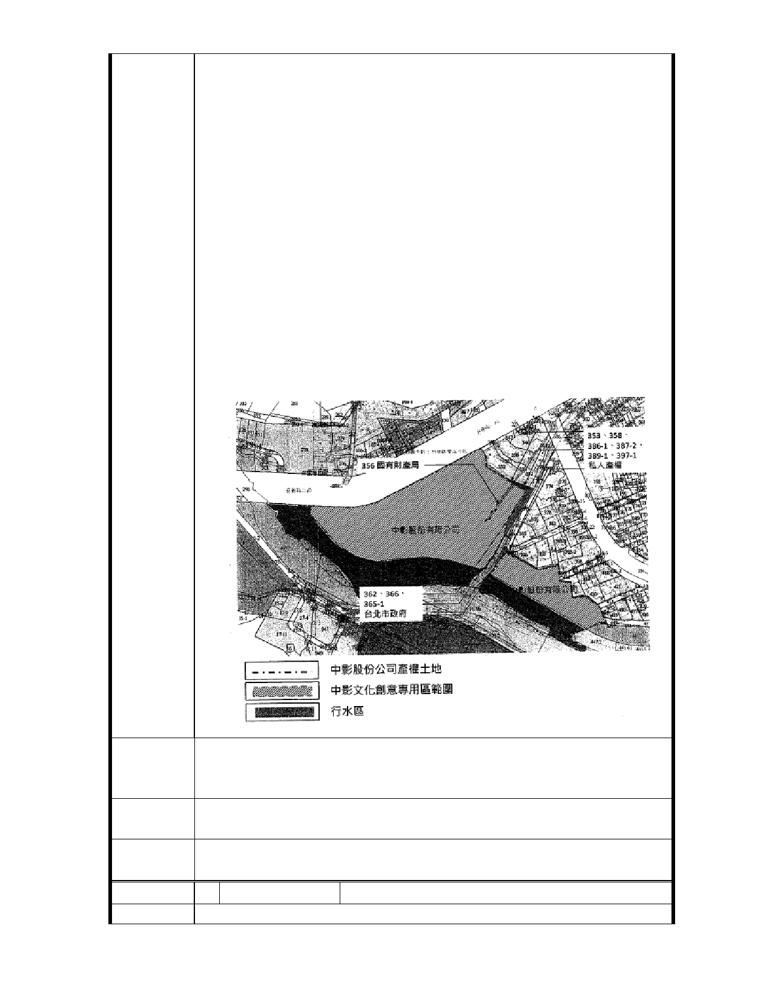

份；係包含鄰地文教區周邊土地清查，將士林區至善段六
小段 353、358、362、366、365-1、386-1、387-2、389-l
及 397-1 地號等 9 筆文教區土地併入旨揭案計畫範圍內
做整體規劃，故計畫範園為士林區至善段六小段 353 地
號等 36 筆土地，面積為 2.9408 公頃。
四、計畫範園內士林區至善段六小段 356 地號土地面積 71
平方公尺，所有權人為財政部國有財產局，現況使用分區
為文教區；其土地位置於中影文化城範圍內。中影文化城
土地所有權人中影股份有限公司，考量文化創意專用區整
體規劃發展，刻正辦理國有地申購相關程序。士林區至善
段六 353、358、362、366、365-1、386-1、387-2、389-1、
及 397-1 地號等 9 筆文教區土地為屬私人土地及臺北市政
府產權，土地使用權同意書未能取得， 建請貴局同意此 9
筆土地不劃入「中影文化創意專用區」計畫範園內，故本
計畫範園更改為士林區至善段六小段 356 地號等 27 筆土
地，面積為 2.8869 公頃。
建請貴局同意士林區至善段六小段353、358、362、366、365-1、
建 議 辦 法 386-1、387-2、389-l及397-l 地號等 9 筆土地，不納入「中影
文化創意專用區」計畫範圍。
專案小組
結 論 同編號 2
委
決
員
會
議
同編號 2
編 號4
建議位置
陳情人 東吳大學王董事長紹堉
- 13 -